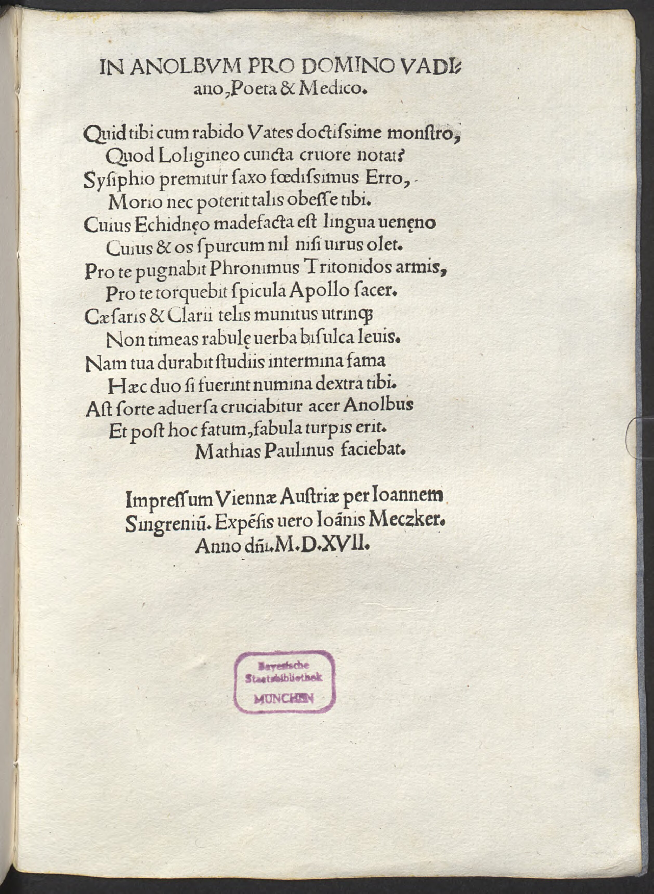

Watt 19 (Matthias Paulinus)
Faksimile

Transkription
In Anolbum pro domino Vadiano, Poeta et Medico.
Quid tibi cum rabido Vates doctissime monstro,
Quod Loligineo cuncta cruore notat?
Sysiphio premitur saxo foedissimus Erro,
Morio nec poterit talis obesse tibi.
Cuius Echidnaeo madefacta est lingua veneno
Cuius et os spurcum nil nisi virus olet.
Pro te pugnabit Phronimus Tritonidos armis,
Pro te torquebit spicula Apollo sacer.
Caesaris et Clarii telis munitus utrimque
Non timeas rabulae verba bisulca levis.
Nam tua durabit studiis intermina fama
Haec duo si fuerint numina dextra tibi.
Ast sorte adversa cruciabitur acer Anolbus
Et post hoc fatum, fabula turpis erit.
Mathias Paulinus faciebat.Übersetzung
Gegen Anolbus für den Herrn Watt, den Dichter und Arzt.
Was <ist da zwischen> dir, gelehrtester Sänger, und dem rasenden Monster, dass er alles mit dem Blut des Tintenfischs anstreicht? <Dieser> scheußlichste Landstreicher wird vom Fels des Sisyphos bedrängt und ein solcher Narr wird dir nicht schaden können. Dessen Zunge ist getränkt vom Gift der Echidna und dessen Mund riecht nur nach schmutzigem Gestank. Für dich wird der Kluge mit den Waffen der Tritonide kämpfen, für dich wird der heilige Apoll Geschosse schleudern. Auf beiden Seiten gewappnet mit den Waffen Caesars und des Klariers dürftest du nicht die doppelzüngigen Worte des unbedeutenden Haarspalters fürchten. Denn dein unendlicher Ruhm wird durch <deine> Werke fortdauern, wenn diese zwei Gottheiten dir geneigt sind. Aber der scharfe Anolbus wird durch ein ungünstiges Los gequält werden und nach diesem Schicksal wird <seine> Geschichte eine schändliche sein.
Matthias Paulinus hat <das> gemacht.Metadaten
| Titel des Gedichts: | In Anolbum pro domino Vadiano, Poeta et Medico. |
| Autor der Gedichts: | Matthias Paulinus (Matthias Paulinus) |
| Containerwerk: | Ioachimi Vadiani Helvetii Aegloga, cui titulus Faustus, Wien 1517 |
| Autor des Containerwerks: | Joachim Watt (Joachim Vadianus) |
| Gattung des Containerwerks: | Ekloge, Bukolik |
| Erscheinungsjahr: | 1517 |
| Verschlagwortung: | Tadel, Spott, Kritiker, Anolbus, Sisyphus, Gift, Galle, Athene, Apoll, Gott, Militär, Krieg, Ruhm, Nachruhm, Poetologie |